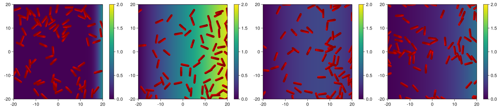
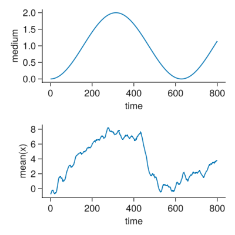

Bacterial chemotaxis
We use the model of bacterial cells by Volfson et al. (2008) and modify it to add active movement to the bacteries.
Over the physical model we add some active forces and a tumbling displacement model. The original physical model can be found in Models/rods.jl. We can copy its code and modify it in the following.
- Add to the moving force an additional propulsion term.
- Add to the agents a tumble and run protocol.
- Add a medium which the model will detect.
- Keep cells inside some boundaries.
Load packages
using CellBasedModels
using GLMakie
Makie.inline!(true)
using GeometryBasics
using DistributionsModify the model
The model is a copy of the model as provided in Models/rods.jl. We mark the added lines to the code to adapt it to a chemotaxis model.
rods2DChemotaxis = ABM(2,
agent = Dict(
:vx=>Float64,
:vy=>Float64,
:theta=>Float64,
:ω=>Float64,
:d=>Float64,
:l=>Float64,
:m=>Float64,
:fx=>Float64,
:fy=>Float64,
:W=>Float64,
:pressure=>Float64,
:tTumble=>Float64, #We add to the agent a time to tumble or to run
:active=>Bool, #Add a switch to change between tumbling and running
),
model = Dict(
:kn=>Float64,
:γn=>Float64,
:γt=>Float64,
:μcc=>Float64,
:μcw=>Float64,
:β=>Float64,
:βω=>Float64,
:ωTumble=>Float64, #Add a torque of tumbling
:τTumble=>Float64, #Add a frequency of tumbling
:fChem=>Float64, #Add a force of propulsion
:DMedium=>Float64, #Add a diffusion constant of the medium
:ωMedium=>Float64 #Add a frequency of the oscillating medium
),
medium = Dict(
:mm => Float64 #Add a medium parameter
),
agentODE = quote
fx = 0
fy = 0
W = 0
pressure = 0
@loopOverNeighbors i2 begin
Fijx, Fijy, Wij = CBMModels.rodForces(
x,y,d,l,theta,vx,vy,m,
x[i2],y[i2],d[i2],l[i2],theta[i2],vx[i2],vy[i2],m[i2],
kn,γn,γt,μcc,μcw
)
#Append the interaction forces
fx += Fijx
fy += Fijy
#Append radial forces
W += Wij
#Keep track of preassure in the media
pressure += sqrt(Fijx^2+Fijy^2)
end
#Equations
dt(x) = vx
dt(y) = vy
dt(vx) = -β*vx+fx/m + active * fChem * cos(theta) #Add the propulsion force
dt(vy) = -β*vy+fy/m + active * fChem * sin(theta) #Add the propulsion force
dt(theta) = ω
dt(ω) = W/(m*(d+l)^2/12+m*d^2)-βω*ω
end,
agentRule = quote
#Code rule switch between tumbling and running
if tTumble < t && active #Activate tumbling if the particle was active (running) and the tumbling time ended
vx = 0
vy = 0
active = false
ω += ωTumble
tTumble += 1.
elseif tTumble < t && !active # Activate tumbling if the particle was tumbling (active off) and the running time ended (we resuse the tTumble time)
ω = 0
active = true
tTumble += CBMDistributions.exponential((2-mm)*τTumble)
end
# Very rudementary rule to to fix the bacteries to move inside the boundaries using onluy the center of the rod
if x < simBox[1,1]
x = simBox[1,1]
elseif x > simBox[1,2]
x = simBox[1,2]
end
if y < simBox[2,1]
y = simBox[2,1]
elseif y > simBox[2,2]
y = simBox[2,2]
end
end,
#Medium dynamics with dirichlet conditions and a wall that is as oscillating source of material
mediumODE=quote
if @mediumInside()
dt(mm) = DMedium*@∂2(1,mm)# we only diffuse in x as the symmetry is in x
elseif @mediumBorder(1,-1)
mm = 0
elseif @mediumBorder(1,1)
mm = sin(ωMedium*t)+1 #Oscillatory behaviour
elseif @mediumBorder(2,-1)
mm = 0
elseif @mediumBorder(2,-1)
mm = 0
end
end,
neighborsAlg=CBMNeighbors.CellLinked(cellEdge=4)
);Initialising the community
com = Community(
rods2DChemotaxis,
N=75,
dt=0.1,
simBox=[-20 20;-20 20.],
NMedium=[200,200],
)
m = 1/100
g = 1/10000
d = 1
com.kn = 2E6 * (m*g/d)
com.γn = 2.2E2 * sqrt(g/d)
com.γt = 2.2E2 * sqrt(g/d)
com.μcc = 0.1
com.μcw = 0.8
com.β = .8
com.βω = .8
com.fChem = 1
com.τTumble = 2
# com.τTumbleMin = 1
com.ωTumble = 1
com.ωMedium = .01
com.DMedium = 3
com.m = 1.
com.d = 1.
com.l = 3;
com.x = rand(Uniform(com.simBox[1,:]...),com.N)
com.y = rand(Uniform(com.simBox[2,:]...),com.N)
com.theta = rand(Uniform(0,2π),com.N);Evolving the community
As the evolution function may take some time, we add a progress message to the evolution to provide information of progress.
evolve!(com,steps=8000,saveEach=10,progressMessage=(com)->println("Step: ",round(Int,com.t)*10))Plot of the results
- We plot samples of the medium and bacteries.
- The mean position of the bacteries over time.
fig = Figure(resolution=(1800,400))
for (j,i) in enumerate(1:round(Int,length(com)/4):length(com))
begin
d = getParameter(com,[:x,:y,:d,:l,:theta,:pressure,:mm])
ax = Axis(fig[1,2*j-1])
m = heatmap!(ax,
range(com.simBox[1,1],com.simBox[1,2],length=size(com.mm)[1]),
range(com.simBox[2,1],com.simBox[2,2],length=size(com.mm)[1]),
d[:mm][i],
colorrange=(0,2.)
)
xlims!(com.simBox[1,:]...)
ylims!(com.simBox[2,:]...)
x = Observable(d[:x][i])
y = Observable(d[:y][i])
xs1 = Observable(d[:x][i]+d[:l][i]./2 .*cos.(d[:theta][i]))
ys1 = Observable(d[:y][i]+d[:l][i]./2 .*sin.(d[:theta][i]))
xs2 = Observable(d[:x][i]-d[:l][i]./2 .*cos.(d[:theta][i]))
ys2 = Observable(d[:y][i]-d[:l][i]./2 .*sin.(d[:theta][i]))
ms = Observable([Point3f0(i/2,i/2,0) for i in d[:d][i]])
mc = Observable([Point3f0(ll,dd/2,dd/2) for (ll,dd) in zip(d[:l][i],d[:d][i])])
theta = Observable(d[:theta][i])
plotRods2D!(ax,x,y,xs1,ys1,xs2,ys2,ms,mc,theta,color=:red)
Colorbar(fig[1,2*j],m)
end
end
display(fig)
d = getParameter(com,[:x])
fig = Figure(resolution=(400,400))
ax = Axis(fig[1,1],xlabel="time",ylabel="medium",
rightspinevisible=false,
topspinevisible=false,
xgridvisible=false,
ygridvisible=false
)
lines!(ax,[i.t for i in com.pastTimes],[1-cos(com.ωMedium[1]*i.t) for i in com.pastTimes])
ax2 = Axis(fig[2,1],xlabel="time",ylabel="mean(x)",
rightspinevisible=false,
topspinevisible=false,
xgridvisible=false,
ygridvisible=false
)
lines!(ax2,[i.t for i in com.pastTimes],[mean(i) for i in d[:x]])
display(fig)